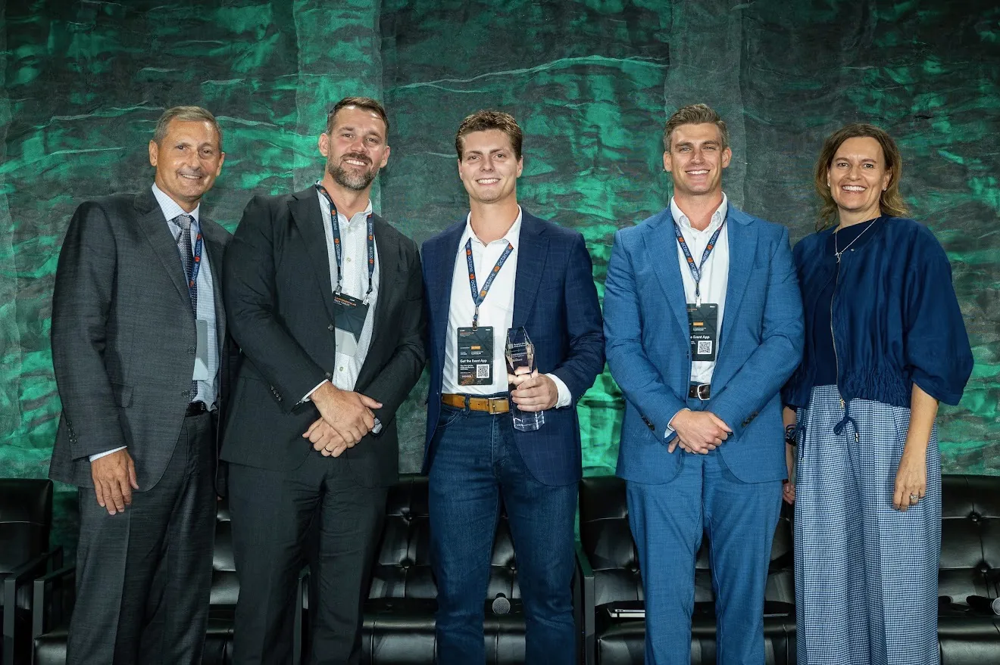

Newport Beach, California, September 2026: Arterial Intelligence, a medical technology company developing AI-powered vascular diagnostics, was named the People’s Choice Award winner at the 2026 Cardiovascular Tech Forum (CTF) in Newport Beach, California.
Hosted by Octane OC, the Cardiovascular Tech Forum brings together physicians, entrepreneurs, investors, industry leaders, and emerging medical technology companies focused on advancing cardiovascular care. Arterial Intelligence was selected to present its technology and vision to the cardiovascular community during the event.
Arterial Intelligence is developing a next-generation vascular diagnostic platform designed to make the detection and risk assessment of peripheral artery disease (PAD) faster and more accessible. The company’s technology combines Doppler ultrasound with artificial intelligence to analyze arterial blood-flow waveforms, with the goal of helping clinicians identify vascular disease and better understand patients’ cardiovascular and limb risk.
Following the company’s presentation, Arterial Intelligence received the People’s Choice Award, determined by an audience vote from attendees across the cardiovascular ecosystem, including physicians, entrepreneurs, investors, and industry professionals.
The recognition represents another milestone for Arterial Intelligence as the company advances its technology toward clinical and regulatory development and expands its relationships across the cardiovascular community.
“Winning the People’s Choice Award was particularly meaningful because it came directly from the people we ultimately hope to build alongside: physicians, entrepreneurs, investors, and leaders across cardiovascular medicine. Peripheral artery disease remains dramatically underdiagnosed, and our goal is to give clinicians a faster and more intelligent way to identify these patients and understand their risk. Seeing that vision resonate with this audience was incredibly encouraging.”

Arterial Intelligence is currently advancing the development of its Doppler-based vascular diagnostic platform while working with clinical, engineering, regulatory, and industry partners to prepare the technology for clinical validation and commercialization.
The award adds to the company’s growing momentum as Arterial Intelligence works to translate years of vascular research into a practical diagnostic platform capable of bringing advanced vascular assessment closer to the point of care.
About Arterial Intelligence
Arterial Intelligence is a medical technology company developing AI-powered vascular diagnostics for the detection and risk assessment of peripheral artery disease. The company is building a portable Doppler ultrasound platform that combines rapid vascular data acquisition with artificial intelligence to help clinicians identify disease and assess cardiovascular and limb risk. Arterial Intelligence’s mission is to make sophisticated vascular diagnostics faster, more accessible, and more actionable across the healthcare system.